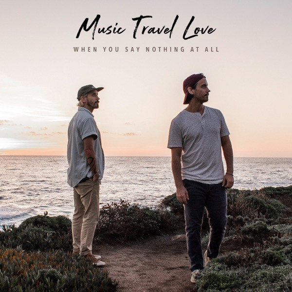
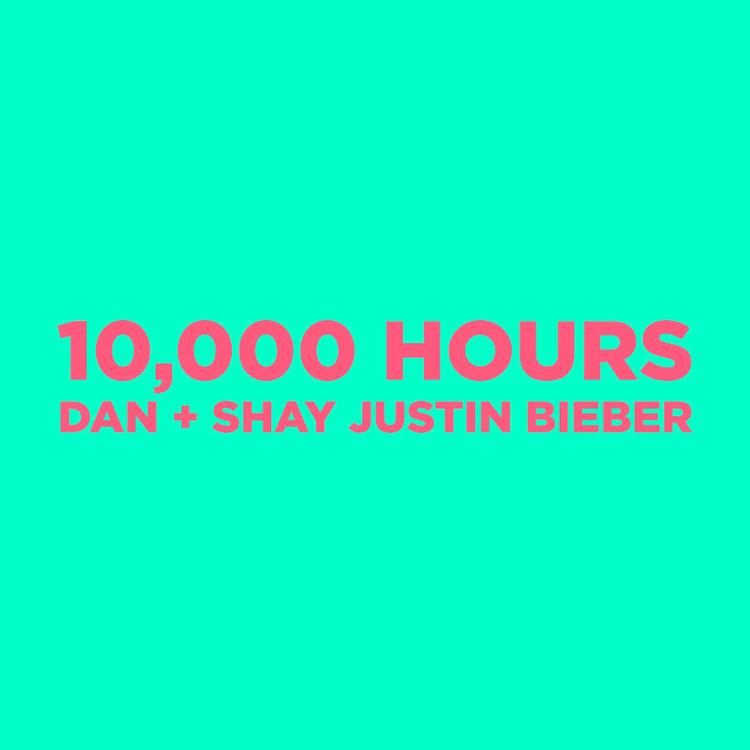
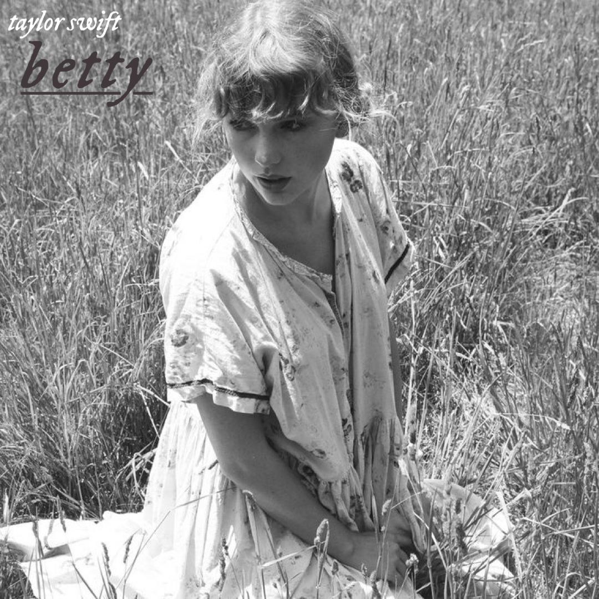
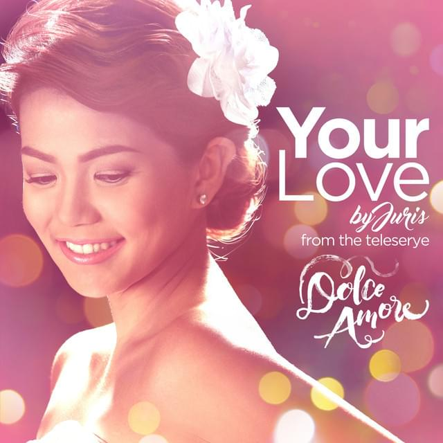

Pop music or popular
music is an ever-evolving genre that encompasses any music that is designed
for the masses. Anything played on mainstream radio can be categorised as
pop.
“I Like Me Better” is a
worldwide smash hit single recorded by American singer
and songwriter Lauv. In the lyrics, Lauv, who is deeply in love with his
girlfriend, tells her just how much he treasures her presence in his
life.
I Like Me Better - Lauv
"Memories" is a sparse,
reflective track in which Adam Levine looks back on the good times with a loved
one while enjoying some drinks with friends.
Memories - Maroon 5
Music Travel Love is a Canadian brother duo
comprised of Bob and Clint Moffatt. began their journey traveling around the world setting up their
studio to create music outdoors. Here's my first favorite music from them.

When You Say Nothing At All (Cover) - Music Travel Love
COUNTRY
Also known as country
and western, country music has its roots in the south of the USA. Having evolved
from a combination of different fold styles.
"10,000 Hours" is
a song recorded by American country music duo Dan + Shay and Canadian singer
Justin Bieber.

10,000 Hours - Dan + Shay, Justin Bieber
"Betty" is part of
Taylor Swift's "The Teenage Love Triangle" of this album. The song tells
about what happened after that summer love from "August" when James was
cheating on Betty.

betty - Taylor Swift
"Shallow" is a
song performed by Lady Gaga & Bradley Cooper from the soundtrack to the
2018 musical A Star Is Born.
Shallow - Lady Gaga, Bradley Cooper
OPM
Filipino pop music,
otherwise known as Original Pilipino Music or OPM, refers broadly to the pop
music that first emerged in the Philippines in the early '70s and has since
come to dominate radio airplay and karaoke playlists in the Filipino market
and beyond.
My favorite opm from
the tv series Dolce Amore covered by Juris.

Your Love - Juris
Angela Ken, the
TikTok star who inspired with her songwriting, has finally released the full
version of her viral tune about self-love, “Ako Naman Muna.”
Ako Naman Muna - Angela Ken
One of the most popular
opm from the mcdo commercial before.